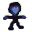
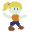
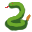

You are  Kristie, an employee at Ancient Ruins Unscape Room and Theme Park.
Help  Lara and her many identical relatives enjoy their vacation by reloading props, resetting traps, and placing animatronic critters throughout the Unscape Room.
Lara must reach the Quite Valuable Cup at the end of the Unscape Room. You will lose points if she fails to reach the cup, gets too bored, or loses her suspension of disbelief.
You can press Buttons to open Doors for Lara. If Lara is blocked by a closed door for too long, she will get bored, and you will lose points. But if she walks into a room that isn't properly reset and gets confused, you will lose even more points.
Staff Doors are disguised as coffins. You'll lose points if Lara sees you use a Staff Door, but otherwise she won't see them.
You can pick up  Snakes from the supply closets and drop them in rooms. If Lara has a gun, she will shoot the snake. If she is unarmed, she will flee. You will lose points if Lara thinks the snake was too easy or too hard to defeat.